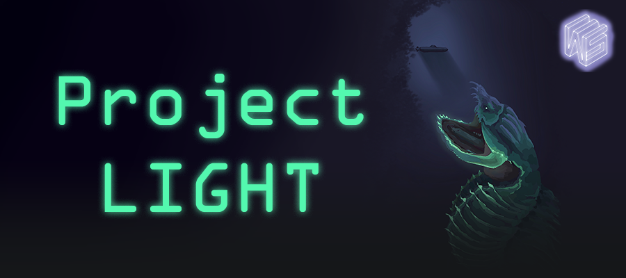

Pre-Alpha 1 Sprint
Sept 18th, 2022 to Oct 2nd, 2022 - Documentation & Feature Implmentation

Introduction
Hello! Welcome to my first Project Light Dev Blog. In this dev blog,
I will be posting updates on my involvement bi-weekly in WolverineSoft Studio Fall 2022:
Project Light as a programmer in a ship & system squad.
Even though Project Light has been developed since the summer of 2022 and I have been part of the
summer studio, please note that I will be focusing on posting my involvement for fall 2022.
Project Overview
Project Light is an underwater-themed strategy game inspired by FTL: Faster Than Light in terms of game mechanics. The prototype version is released on the itch.io page developed by 19 members over the summer of 2022. In the fall semester, I'm working as a programmer along with a team of 30+ members.
Programming and Development (14 hours)
As a programmer, I spent the majority of my work time on programming and implementing new features into our game.
My main task for this sprint was to implement the walls, ladders, floors, and doors with our new side-view perspective rather than a top-view perspective. These features are important as they provide various interactions and buffs to crews in the player ship. These additional features would help the player to strategize their tactics even more during the gameplay such as preventing hazards from spreading to other rooms by closing doors.
Details of new objects to be implemented I mentioned above are as follows:
- Walls: protect crews in the room from hazards and enemy attacks. No interaction with crews. Can be upgraded to provide increased protection.
- Floors: Pathways between each rooms. Can be upgraded to provide a movement speed bonus to crews on the ship.
- Doors: connect ship rooms horizontally. Can be opened or closed through crew and player interaction. Can be used strategically to prevent hazards from spreading to other rooms.
- Ladders: connect rooms vertically. Can be upgraded to provide crew movement speed boosts when the crew's collider is on the ladder's collider.
Doors
Doors are the first feature I implemented as it is the only object out of four that requires interaction with crews and the player. I created a new prefab called Door and attached a new component called ShipDoorManager.cs to ensure everything is working correctly for the crew and the player's interaction with the door. For example, the door should remain closed all the time but when the crew and door collide with each other, the door should open and close once the crew moves to the next room. And when a player clicks the opened door, the door should be closed and vice versa. Below are code snippets from ShipDoorManager.cs.
/// collision detection with enemy and crew members in the ship
void OnTriggerEnter2D(Collider2D collision)
{
if (collision.CompareTag("Crew") && gameObject.transform.parent.CompareTag("PlayerShip") ||
collision.CompareTag("Enemy") && gameObject.transform.parent.CompareTag("EnemyShip"))
{
if (!isDoorOpened)
{
StartCoroutine(OpenAndCloseDoor());
}
}
}
// open and close the door when crew is passing by
IEnumerator OpenAndCloseDoor()
{
OpenDoor();
yield return new WaitForSeconds(doorCloseDelay);
CloseDoor();
}
// Handles the door when a player clicks on the door
public void OnPointerClick(PointerEventData data)
{
playerController.ClickDoor(gameObject, data.button == PointerEventData.InputButton.Left);
}
And here's the short gameplay of the door's interaction in the current game.
As you can see, selecting a crew does not always work. Thus, we need to keep an eye on that for the future debugging period. In addition, a new document regarding crew navigation has been created by the designer recently and there are a few adjustments that I need to change to doors. For instance, the player interaction with the door should be changed to crew standing on the door and pressing "D" key to open or close the door rather than through mouse buttons.
Walls, Ladders, and Floors
There isn't that much to show for walls, ladders, and floors at the moment since they are not interactive as doors and the crew navigation feature has not been finalized to factor in my implementation yet. Therefore, I have created prefabs for each of these objects and attached a script that manages using these objects such as required variables and a public method for upgrading levels. Below is the screenshot of the prefabs.
And below is the code snippet of Wall manager class (ladders and floors have similar code bases).
public class ShipWallManager : MonoBehaviour
{
[Header("Wall related field")]
[SerializeField] private int maxUpgradeLevel = 3;
[SerializeField] private int currentUpgradeLevel = 1;
[SerializeField, Tooltip("Current protection resistance multiplier \n" +
"reduction: 0.1f == 10% damage reduction")]
private float currentProcResMult = 0.1f;
[SerializeField, Tooltip("Hazard automatic fix chance"), Range(0f, 1f)]
private float hazardResolveChance = 0f;
[SerializeField, Tooltip("A references to rooms on this floor object")]
private GameObject connectedRoom;
// getter methods
public int CurrentUpgradeLevel { get { return currentUpgradeLevel; } }
public GameObject ConnectedRoom { get { return connectedRoom; } }
// use this for crew's movement speed when crew interacts with the ladder
public float CurrentProcResMult { get { return currentProcResMult; } }
public float HazardResolveChance { get { return hazardResolveChance; } }
// Upgrade the level of currentUpgradeLevel
public void UpgradeLevel()
{
currentUpgradeLevel = Mathf.Clamp(currentUpgradeLevel + 1, 0, maxUpgradeLevel);
if (currentUpgradeLevel == 2)
{
currentProcResMult *= 2f; // double the original
hazardResolveChance = 0.05f; // 5% chance
}
else if (currentUpgradeLevel == 3)
{
currentProcResMult *= 1.5f; // triple the original
hazardResolveChance = 0.15f; // 15% chance
}
}
}
Documentation (3 hours)
I spent a decent amount of work for this sprint on creating a how-to build a new ship system for new developers. Since I worked on creating a foundation for building a ship system over the summer and newly joined developers might not be familiar with the architecture, I decided to volunteer on creating a document so that new developers can comprehend and follow along easily when they are assigned to build a new ship system.
As you can see, I've attached a diagram of scriptable objects to explain how the current ship system is structured. Then I attached screenshots of important scripts when building a new ship system under the step by step section.
Meetings (4 hours)
For four of my 24 hours of bi-weekly involvement, I spent my time in the studio meeting including
squad and department meetings.
Throughout the meeting, we went to each member's accomplishments for a particular week and planned out
the task for the next week.
Discussion and Communication (1 hour)
As a programmer, it is crucial to communicate with designers closely especially in the early stage of development to check if a certain part of tasks is implemented into the game as expected. This is to ensure that we do not face weird bugs in a later stage of development. By utilizing discord ship and system channel chat, I communicated closely with Andrew Schafer, one of the designers for the ship and system squad regarding the designs of walls, ladders, floors, and doors for new side-view perspective.
Playtesting (2 hours)
I spent two of 24 hours of work over the last two weeks playtesting our prototype version.
Not only that playtesting our prototype one of our assignments, but I also wanted to get familiar with
what we have developed over the summer to check the current status of the build.
I playtested carefully to spot possible bugs in case we need to fix them before we release our game
in the future. Thankfully, I did not spot any major issues throughout the playtesting session except
for when selecting crews in the player ship doesn't work sometimes. Since crews play a significant role
in our game, we should investigate these occasional selecting errors during the debugging period.
Hours Breakdown
- PROGRAMMING AND DEVELOPMENT: 14 HOURS
- DOCUEMNTATION: 3 HOURS
- MEETINGS: 4 HOURS
- DISCUSSION AND COMMUNCATION: 1 HOUR
- PLAYTESTING: 2 HOURS
- TOTAL HOURS FOR PRE-ALPHA SPRINT 1: 24 HOURS